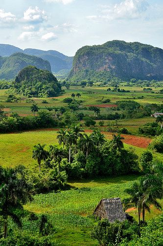
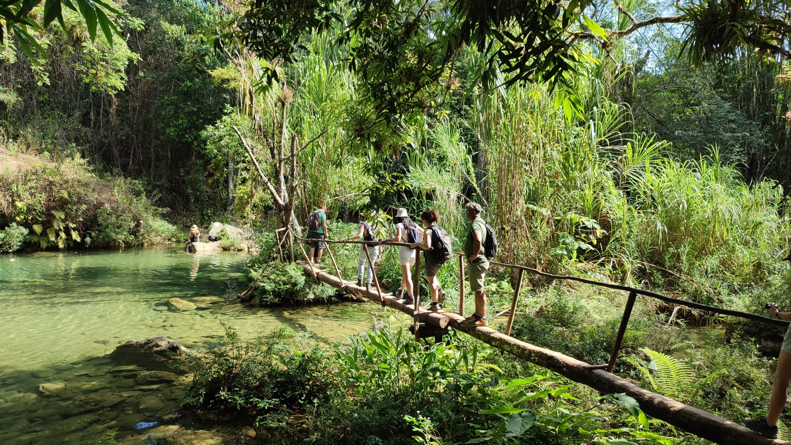
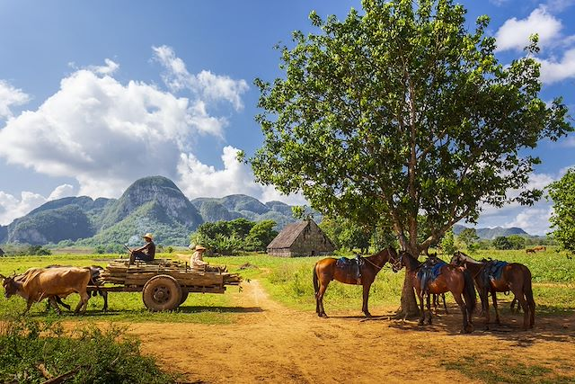
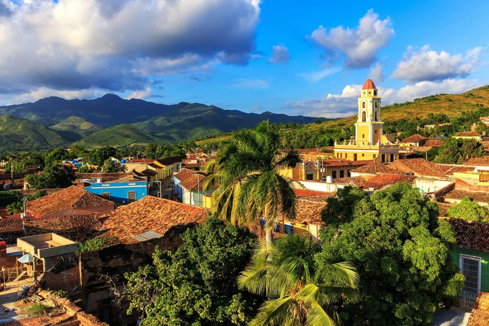
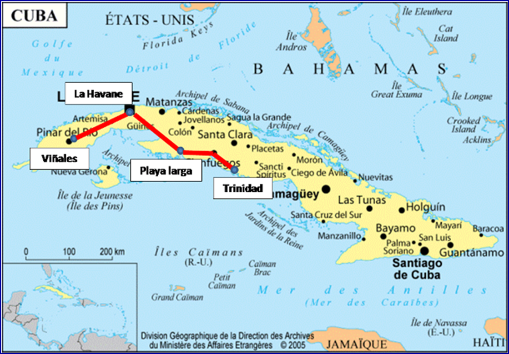
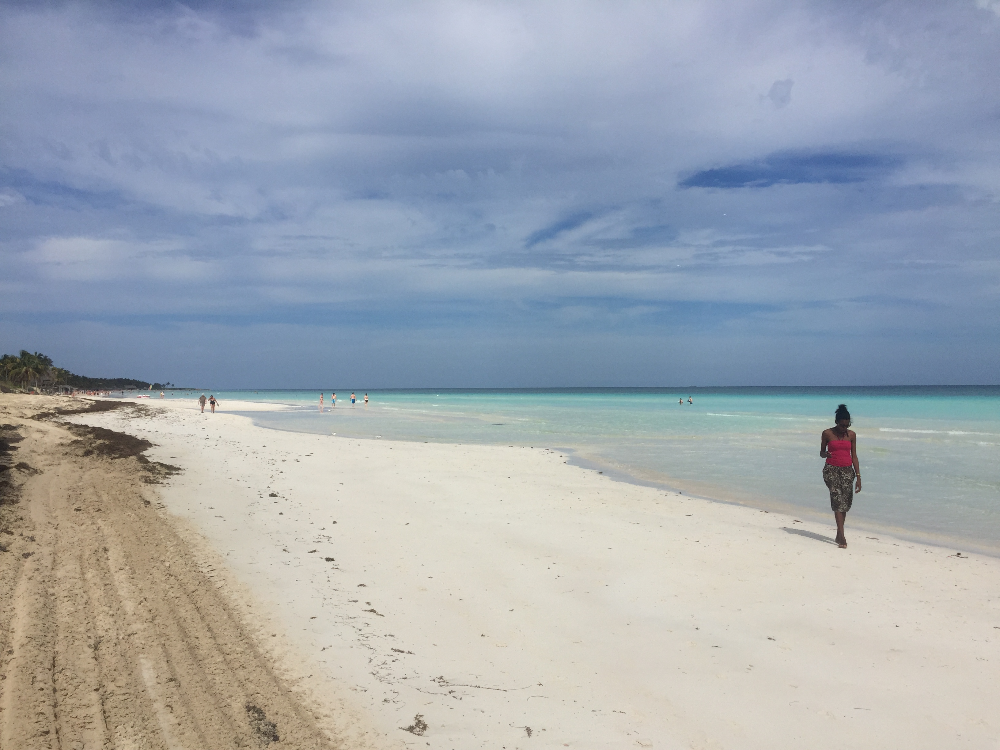
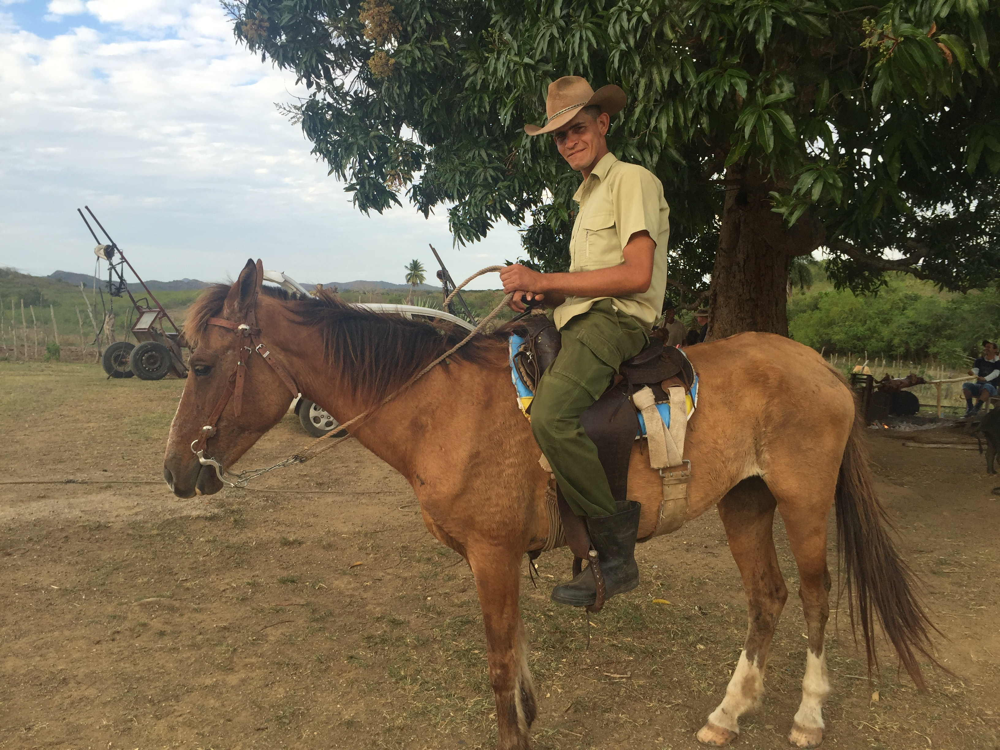
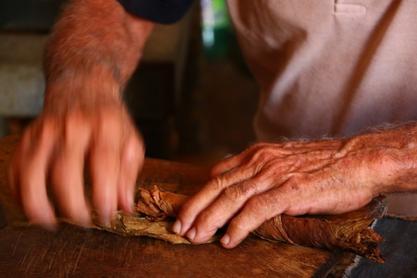

IDÉE VOYAGE EN PETIT GROUPE
Cuba
Randonnée · Mogotes de Viñales & Escambray
🌿 Vallée de Viñales UNESCO
🏔️ Massif de l'Escambray
💧 Cascade Caburní (1 100 m)
🏝️ Baie des Cochons
Sentiers tabac & grottes · Journée paysanne Trinidad
vpdvoyages.com

🥾 LE SÉJOUR
Randonnées de 4 à 8 h, difficulté facile à moyenne. À Viñales : mogotes calcaires, plantations de tabac, grottes et rencontres avec les guajiros. À Trinidad : dans le massif de l'Escambray jusqu'à 1 100 m, cascade Caburní, journée paysanne et Baie des Cochons. Immersion nature et culturelle.
🌿 Viñales · Sierra de los Órganos
🏔️ Escambray · Topes de Collantes
🏝️ Baie des Cochons
Niveau facile à moyen · 4 à 8 h de marche
⛰️ LES MASSIFS
Sierra de los Órganos – Viñales Vallée UNESCO, mogotes calcaires, sentiers à travers tabac et terre rouge. Grottes (Cueva del Indio, Santo Tomás). Rencontres guajiros et café paysan.
Escambray – Topes de Collantes Massif au-dessus de Trinidad. Sentiers ombragés jusqu'à 1 100 m. Cascade Caburní, panoramas sur la ville coloniale et la mer des Caraïbes.

📅 PROGRAMME 1ère semaine – Havane & Viñales
Jour 1 Vol vers Cuba
Jour 2 Arrivée Havane · Installation Vedado/Malecón · Briefing rando
Jour 3 Vieille Havane · Visite guidée Capitole, Plazas · Temps libre
Jour 4 Route Viñales · 1er sentier mogotes · Plantations tabac · Casa particular
Jour 5 Rando vallée 4-6 h · Cueva del Indio · Café guajiro
Jour 6 Grottes & crêtes · Santo Tomás ou crête mogotes · 6-7 h
Jour 7 Ferme agro-écologique · Rando douce 3-4 h · Soirée locale
Jour 8 Retour Havane · Dernier sentier · Repos libre

📅 PROGRAMME 2ème semaine – Baie des Cochons, Trinidad & Escambray
Jour 9 Route sud · Grottes & Cueva de los Peces · Caleta Buena
Jour 10 Playa Larga · Matin plage · Histoire locale · Route Trinidad
Jour 11 Trinidad UNESCO · Plaza Mayor · Casa de la Trova
Jour 12 Journée paysanne · Valle de los Ingenios · Manaca Iznaga · Déjeuner guajiro · Cheval/rivière
Jour 13 Escambray · Topes de Collantes · Cascade Caburní · 6-8 h · 1 100 m
Jour 14 2e rando Escambray · Sentier alternatif · 4-6 h · Retour Trinidad
Jours 15-16 Playa Ancón ou Havane · Temps libre · Vol retour

🥾 LES RANDONNÉES Facile à moyenne · 4 à 8 h
Vallée des mogotes Viñales · 4-6 h · Tabac, terre rouge, vues
Cueva del Indio / Santo Tomás Viñales · 3-5 h · Grottes et sentiers ombragés
Crêtes de mogotes Viñales · 6-7 h · Moyen · Panoramas
Cascade Caburní Escambray · 6-8 h · Jusqu'à 1 100 m
Sentiers Topes de Collantes Escambray · 4-6 h · Forêt et belvédères
Vallée de los Ingenios Trinidad · Journée paysanne · Tour Iznaga, guajiros

🌊 EXPÉRIENCES
Baie des Cochons Playa Larga et Caleta Buena. Grottes inondées, Cueva de los Peces, piscine naturelle. Nature, baignade et un peu d'histoire.
Journée paysanne Valle de los Ingenios – Manaca Iznaga. Tour de guet, déjeuner guajiro (cochon de lait), balade à cheval ou baignade en rivière. Rencontre authentique avec le monde rural cubain.

🛂 AVANT LE DÉPART
- Passeport valable 6 mois après retour, numérisation + photocopie
- Carte de tourisme (visa) à obtenir avant le départ
- Formulaire D'Viajeros à remplir en ligne avant l'arrivée
- Assurance santé obligatoire (attestation via carte Visa) – 155 000 € frais médicaux, rapatriement 24/7
🎒 PRATIQUE RANDONNÉE
Chaussures Bonnes chaussures de marche (pavés + sentiers)
Sac à dos Léger : eau (1,5-2 L), protection soleil, répulsif, en-cas
Vêtements Léger, respirant, couche de pluie, chapeau, maillot
Niveau Facile à moyen · Dénivelé modéré (Escambray jusqu'à 1 100 m)
Monnaie Pesos cubains (CUP) · Change banque/Cadeca
Sécurité Cuba très sécuritaire · Règles de bon sens · Copie passeport



Cuba… en randonnée !
Mogotes · Escambray · Baie des Cochons
Viñales · Trinidad · Facile à moyenne
🌿 Viñales UNESCO
🏔️ Escambray
Cuba
Photos : dossier images/ · Cuba Randonnée Viñales & Escambray